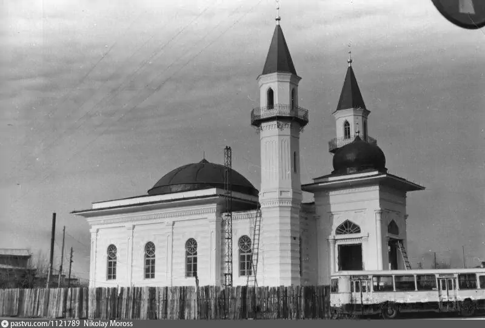
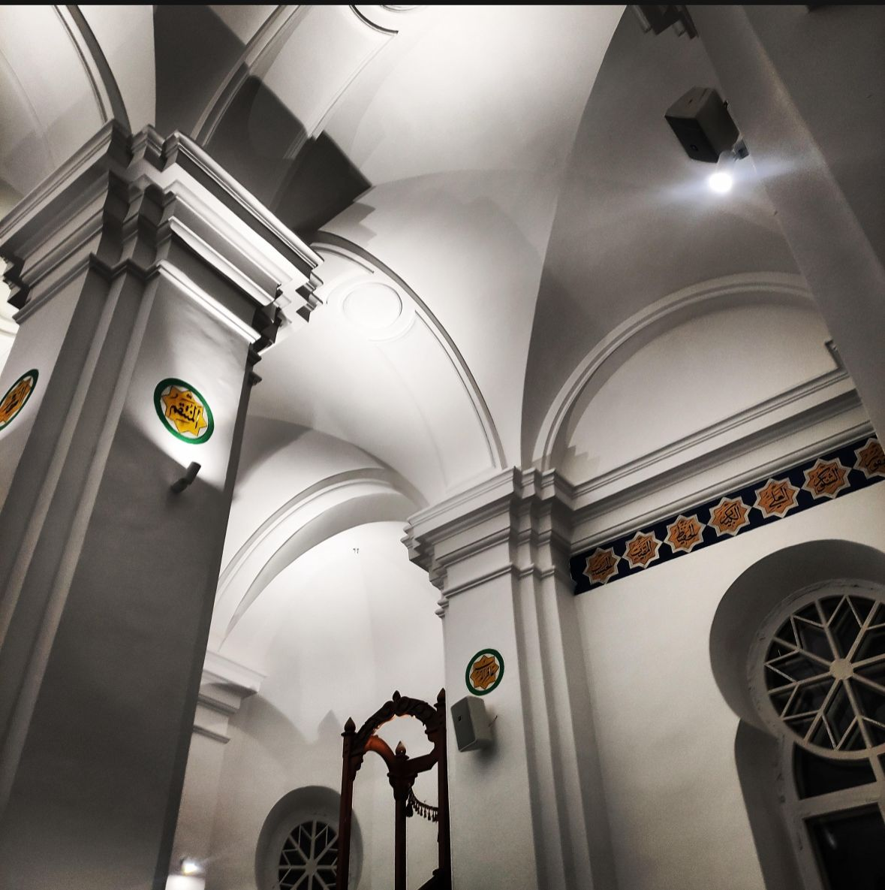
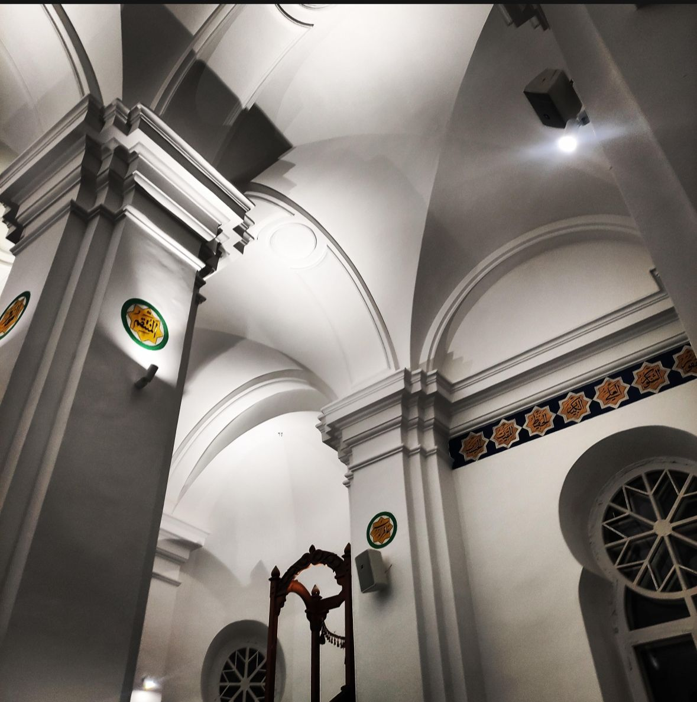

A historic mosque with two minarets – a symbol of Semey's spiritual heritage
The Two-Minaret Mosque in Semey is a unique architectural monument built in the 19th century. It stands out with a rare element for Kazakhstan – two minarets, symbolizing the significance and status of this religious structure in the city.
- Year built: 1856
- Architectural style: Eastern Islamic tradition
- Materials: Brick and wood
- Function: Active mosque and historical landmark
What to see?
- 🕌 Two original minarets
- 📜 Stained glass windows and wooden carvings
- 📸 Unique photo zones and historical atmosphere
How to get there?
📠Semey, Shakarim Street
🚌 Public transport or taxi from the city center
Useful information
⏰ Opening hours: daily, from 09:00 to 20:00
🎟️ Entry: free (visitors should follow the dress code)
🧕 Women are advised to cover their heads
The Two-Minaret Mosque is not only a place of worship, but also a significant cultural site for anyone interested in the history and architecture of Eastern Kazakhstan.
PHOTOS

 
